0.3 Changelogs 模组工具升级日志
Download it from Mega:
https://mega.nz/folder/rNEDCZST#ziUOuYT0p058iQElihSnmQ
更新下载：
https://www.123684.com/s/8pZNTd-dR8KA
老工程如果要升级 Mod 相关工具，则需要覆盖如下目录
- ** MiddleLibLayer**
否则可能会出现意想不到的报错，导致无法正常编译打包。如果无法打包，则点击 Console，将报错堆栈信息发送给开发者。
若存在报错，可考虑整个工程进行覆盖。
更新日志
2025.9.13
改用新水体系统
同步代码至最新版游戏
*启用新水体的波浪效果，需根据此文档，添加包体支持
https://www.yuque.com/chaojiduolajiang/panzerwar/nphxzs02ntq48ydb

2025.1.8
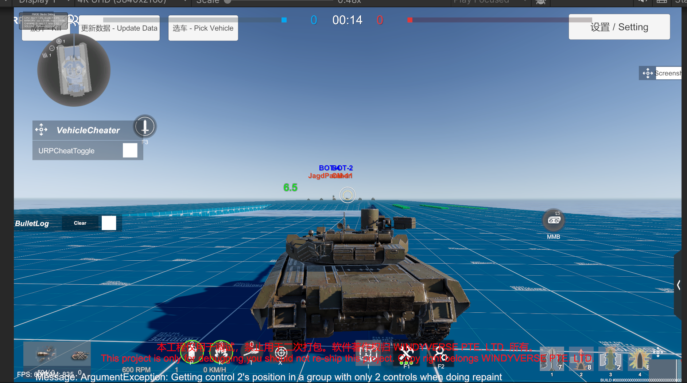
试车场更新
编辑器界面与性能优化
编辑器语言默认跟随系统，大部分界面不会再显示双语
代码同步至最新 Steam 版
本次更新注意更新 com.waveharmonic.crest 文件夹，水体插件有更新
2024.12.8
- 一键导出 DIY 功能的优化，可以批量导出，并在修改原载具后，再次点击导出，就能更新 DIY 的伤害模型等配置同步至最新的载具数据上。
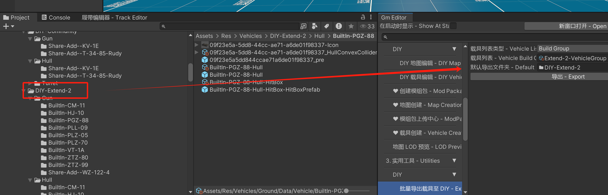
- 增加一键展览所有 DIY 配件，用来检查是否某个配件的插槽配置错误
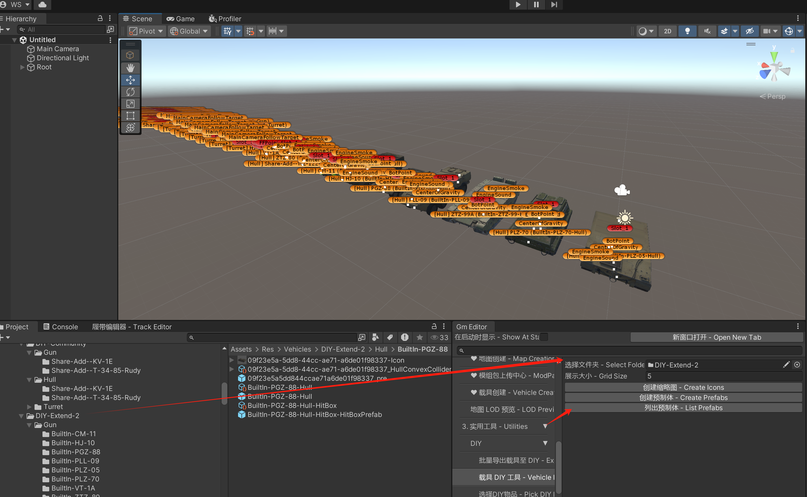
- 编辑器性能优化
- 载具数据对比工具
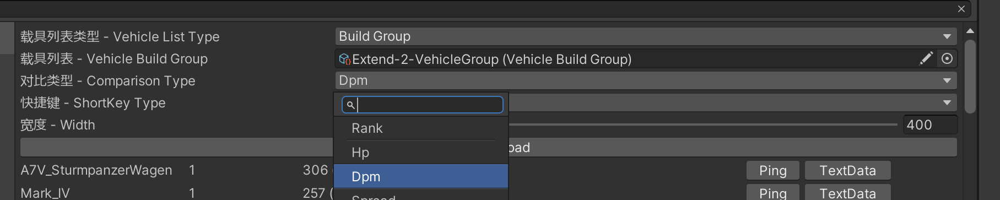
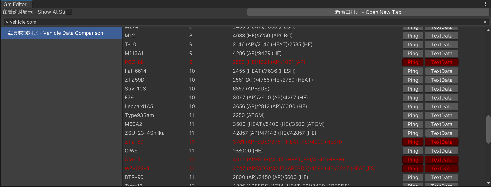
2024.12.2
- 增加快捷键 Ctrl + G 以打开编辑器工具
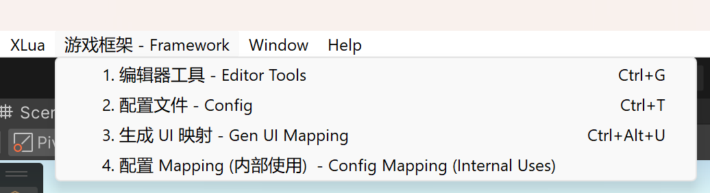
- 试车场增加靶车 （需配置 LuaProject 路径，才可正常加载游戏资源）
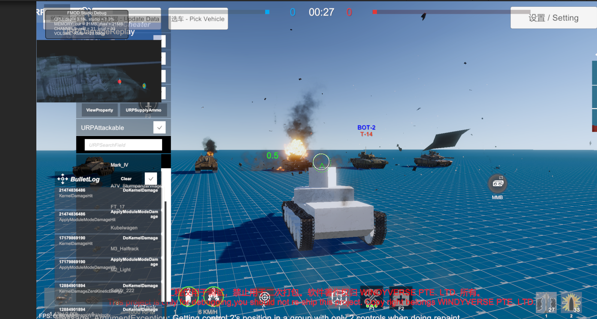
- 遮罩贴图合并工具合并至工具列表

2024.10.29
- 同步游戏代码至最新版本，支持 TV 弹的勾选
- 需复制 com.waveharmonic.crest 至你的工程目录，并覆盖 UnityProject/Packages 与 UnityURPProject/Packages 文件夹
2024.8.27
- 修复炮弹出生点错误
- 修复 Android，iOS 无法打包的问题
2024.8.10
更新日志
- LOD 增加路径选项
- 修复血条模式穿深计算错误
2024.8.9
更新日志
- 同步新的后效逻辑
- 增加一些新后效的参数
- 如果你开启用新的 lod，可以单独取消单个载具不使用新 lod
2024.7.15
更新日志
- 修复超压可以对友军造成伤害
- 修复窝弹区跳弹表现异常
- 优化工坊中 TNT 当量 与 爆炸范围的限制
- 除成员外，其他配件也可被超压 （需要模组制作者勾选)
2024.7.14
- 支持编辑倒车履带曲线
- 增加多个人机瞄准点配置选项
- 增加炮弹信息调试工具，点击 Framework / GM / 炮弹调试，进行使用
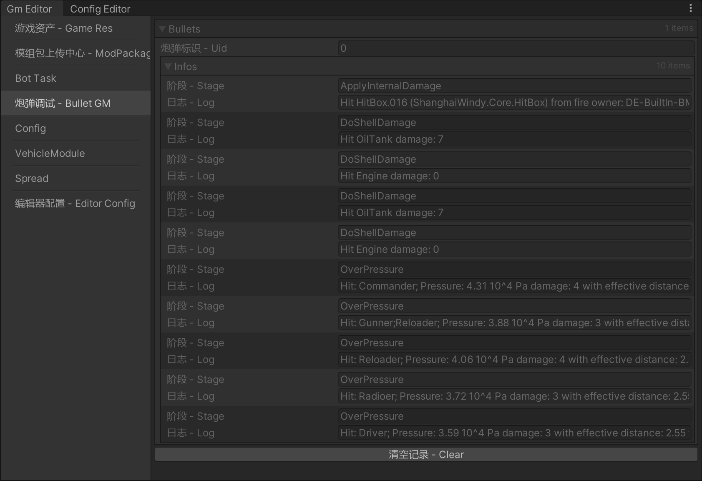
2024.5.15
- 增加油箱是否着火配置
- 观察镜增加是否可以控制主炮
2024.5.2
https://www.yuque.com/chaojiduolajiang/panzerwar/vx3fiyev7y46k55u
- Add capture zone config 增加占点配置
2024.4.30
- Preset Vehicle Queue 预设队列
- Zoom Ratio 炮镜倍率设置
2024.4.22
载具的 lod 文件我们关闭了 r/w ，减少了一倍的内存开销。 需要重新打包所有的载具，以更新 lod 文件的信息
用于编辑器内预览的 SRP-Vehicle-Camouflage 着色器不再会打到包中，以减少内存开销
2024.4.20
- Bank 一键导入
2024.4.12
- 优化弹药边界工具
2024.4.11
- 增加 HP / 模组切换功能
2024.4.6
- 改进编辑器运行载具流程（VehicleData 上试驾功能）
- 改善编辑器一键打包发布流程 （Mod/模组批量打包管理）
2024.4.4
- 增加了载具的碰撞细化
- 上传模组增加了本地 http 代理功能
- 模块可以装填手自动装填二选一了
2024.3.21
- 增加模组上传工具
- 引擎运行版本变更为 2022.3.21f1
将 unityhub://2022.3.21f1/bf09ca542b87 输入游览器，安装新版本 Unity
2024.1.12
- 修复未安装 iOS module 时候，部分模组工具不显示
2024.1.11
- 增加自动保存
2023.12.30
- 三扩数据
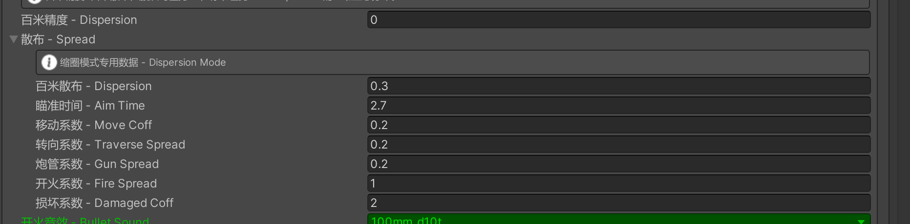
- Range Finder 功能
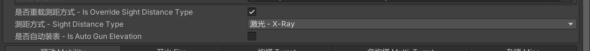
- 快速生成载具缩略图功能优化
2023.12.25
- 快速生成载具缩略图
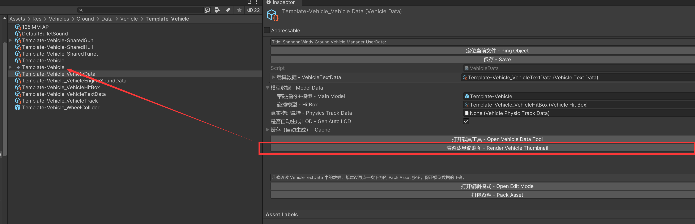
- 载具自定义材质功能
2023.12.23
- 改进自定义材质编辑器功能
2023.12.21
- 增加自定义材质功能
2023.12.16
- 增加 pdb 调试日志，方便开发者定位编辑器报错
- 增加一批工程内置 BulletVFX 定义
- 一些界面优化下拉框选择功能
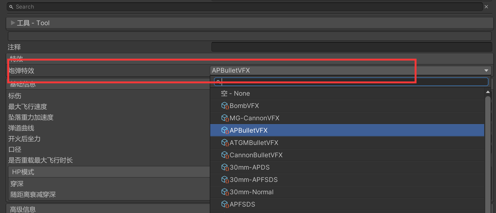
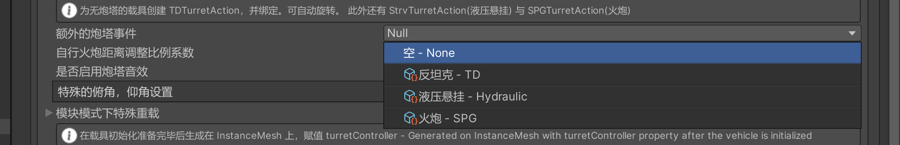
2023.7.23
- 修复斜穿公式计算错误
2023.7.18
- 增加固定穿深的弹头材质，ExplosionWarheadMaterial
- 细化不同弹种的弹头信息
2023.7.8
- 弹头材质增加斜穿参数 - Penetration Vs Angle Coff
- 模块与多炮塔的绑定改为配件 GUID，在 VehicleTextData 上，会根据多炮塔数据自动生成一系列 GUID，在模块上填写对应的 GUID，则内部模块的 debuff 会与对应炮塔进行自动关联
- VehicleInfo 中的多年代改成了数组，只要点击一下 VehicleInfo 数据，对应老数据会迁移到新的数组下
2023.6.24
- 增加飞机 Fmod 工程
2023.4.19 (1.0.10)
- 修复炮塔带缩放情况下， FFPoint 等节点出现位置偏差
- 修复 Lua 断点无法识别文件名， 需要把已导入 Unity 的 lua 脚本选中，然后右键 Reimport 一下
2023.4.17 (1.0.8)
- 修复了 Lua Property 字段部分情况下解析异常
- 修复了 Common 类型 Lua 脚本 OnStarted 未调用
- 增加了一个 Common 类型 Lua 脚本 FollowCameraTutorial ，轮播局内载具，再战斗中按 F1 生效
2023.4.16 (1.0.7)
- 修复了编辑器布局错误
- 增加了校验工具，检查是否项目存在损坏资源
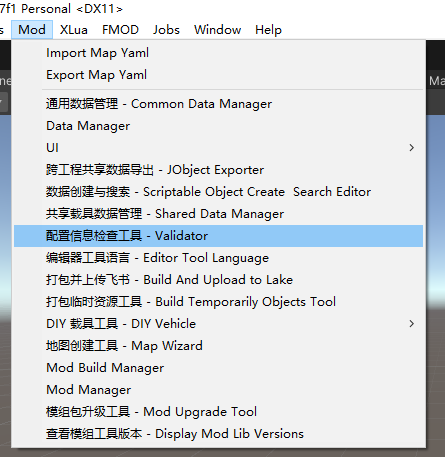
目前支持：载具的 LOD 是否丢失，VehicleHitBox 是否丢失
3. 修复 Vehicle Data Editor 重开编辑器后的一些问题
2023.4.15 (1.0.5)
- 修复了位于 Turret 下的副炮打包时候报错，此 bug 只存在周二以后的编辑器工具中
2023.4.14 (1.0.4)
- 增加飞机瞄准到目标才允许开火选项
2023.4.12
- 新增 fmod 音效调试工具
- 飞机炮塔增加是否默认套父物体纠正轴向
2023.4.9
- 试车场增加对 FPS 武器的支持
- 试车场增加障碍物
- 增加 Lua Profiler，用于自己写的 lua 脚本的性能监控。 需要注意耗时在 0.1ms 以上的脚本是否每帧在调用
2023.4.6
- 付费mod 打包时候强制检查是否填写了模组包 id
- 修复炮弹页面文字乱码
- 修复生成 ui 的 lua 绑定代码错误
2023.4.5
- 同步更新 API
2023.3.27
- 修复部分lua 面板没显示 同步 Property 的按钮
- 瞄具图片与文本支持挂 lua 脚本
2023.3.26
- 编辑器内试车场增加一键更新数据按钮
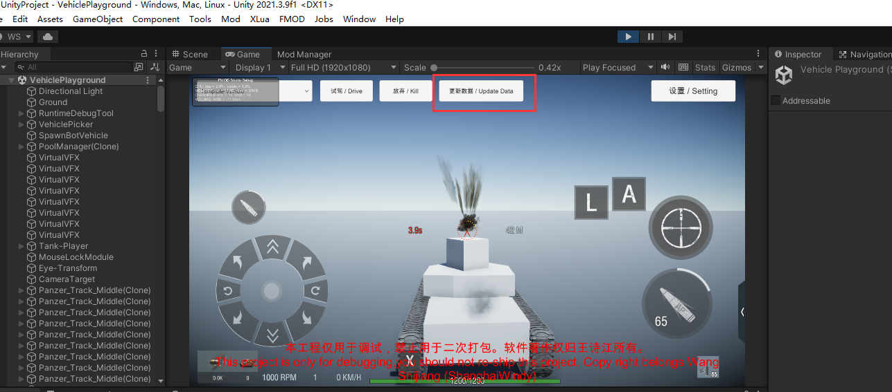
2. Project Setting 窗口增加是否启用优先读取编辑器的本地资源选项
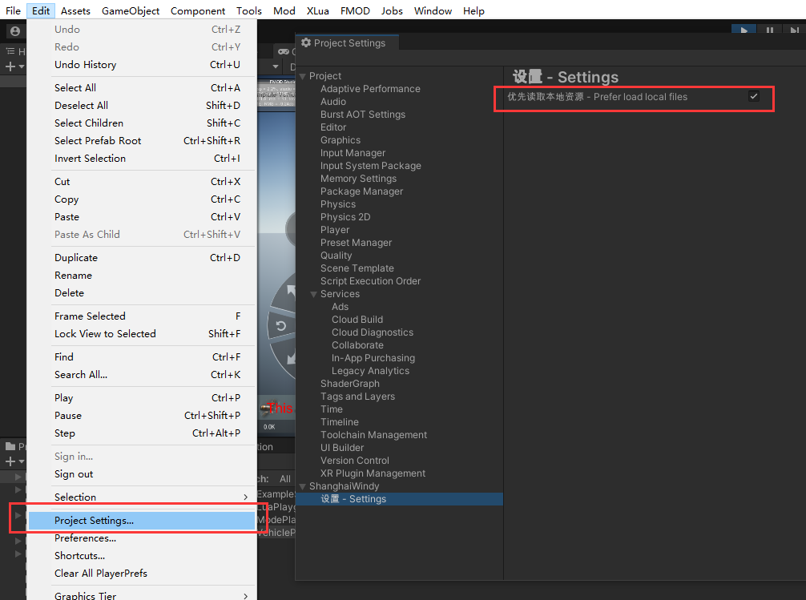
3. DIY 增加 Lua Behavior 配置
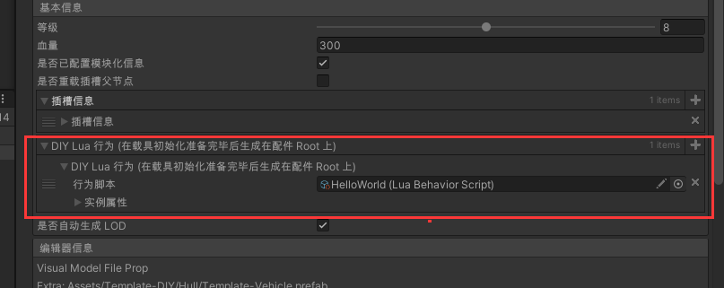
4. DIY 数据，Text Data 数据，现在都支持从编辑器直接读取，无需重新打包，即可让新数据生效
5. PropValue类 支持从 Lua 监听事件
self.OnTotalDamageChanged = function(oldVal, newVal)
print(tostring(oldVal) .. " -> " .. tostring(newVal))
end
self.vehicle.basePlayerState.totalDamage:OnValueChanged("+", self.OnTotalDamageChanged)
- 增加 LuaCommonInstanceData 类，用于做通用脚本 （如多炮塔的 gui 那种）
2023.3.23
- Lua 编写的载具脚本，可以在不重新打包载具的情况下，优先读取编辑器内已修改的版本
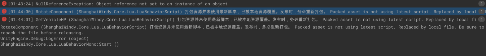
- 可在载具配置数据上直接挂 Lua 脚本，方便统一管理
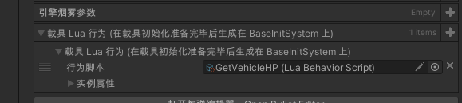
- 载具 Pack 时候，强制检查是否有命名为 MainBody 物体，避免运行时报错
- API 文档增加了 PlayerState 相关的说明文档
2023.3.21
- 增加 Lua 模式的调试场景** ModePlayground.unity**
路径：Packages/com.shanghaiwindy.middlelayer/Tools/RuntimeDebugger/ModePlayground.unity
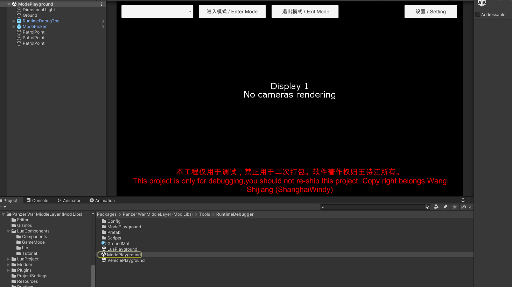
- 编辑器内的载具调试工具改名为 VehiclePlayground.unity
路径： Packages/com.shanghaiwindy.middlelayer/Tools/RuntimeDebugger/VehiclePlayground.unity
- 新增 TeamAPI 方便获取敌我队伍
2023.3.20
- Lua 侧大改动，全新教程文档
2023.3.15
- FmodPlayComponent 组件公开，使用文档见：
- 增加接口，参考文档。xlua 需要加上 CS.类名 才能正常访问此方法。 如 CS.ShanghaiWindy.Core.API.VehicleAPI
2023.3.14
- DIY Holder 增加更新 Extra Info 的按钮
- Lua 脚本示例放在 MiddleLibLayer\LuaComponents 文件夹下，默认的 Template-Vehicle 已使用此示例脚本
- 复制载具数据增加面板自定义复制后的载具 Asset Name
- 模组包页面提示不要使用默认的名称
2023.3.13
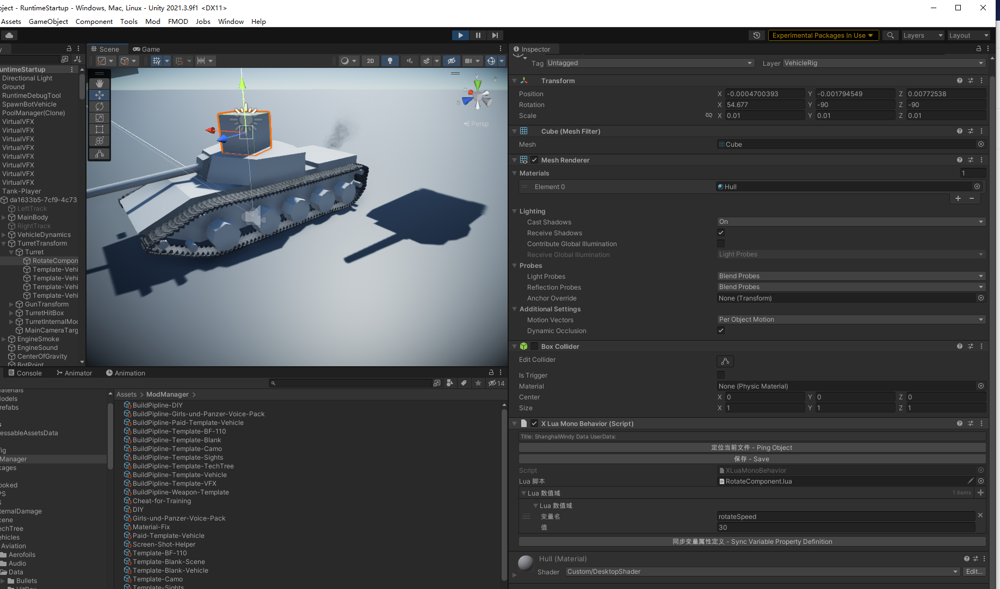
- 增加对 Lua 组件的支持 （XLuaComponent），在 UnityProject 的中，给 Template Vehicle 增加了一个示例的旋转代码
- Vehicle Data 界面可点击查看生成的预制体
2023.3.6
- 修复部分情况下，会出现多个 HitBox 编辑窗口
- 付费模组的 uuid 增加长度校验，防止输错 uuid，导致付费模组无法加载
- 优化部分界面的显示
2023.3.5
- 修复部分飞机在打包后游戏不加载，需要重打 BuildPipline
- 修复编辑模块装甲的界面的厚度显示与实际不一致
2023.3.2
- 修复的 LOD 生成的缓存文件未清除过期 Mesh
- 修复了部分情况点击载具的 Pack，跳转到 LOD 的数据
2023.3.1
- 修复飞机编辑器的炮塔路径错误
- 修复弹药编辑器一些中文显示错误
- HitBox 增加抗破的厚度设置 （游戏内暂时还未生效，等后续版本支持）
2023.2.23
- 修复弹药架按名字倒序排序
- 拆解 DIY 时，自动创建共享数据，用于同步两侧数据
2023.2.22
弹药架按名字排序
生成 lod 时候，根据原始物体的layer赋值
2023.2.21
- 修复了弹药架排序错误的报错
2023.2.18
- 改进 Vehicle Data 与 Vehicle HitBox 的编辑模式，防止部分情况下 Inspector 失去聚焦的情况下，无法编辑。

2023.2.15
- 修复去除模组加密勾选项，仍生成带加密信息的模组包
- 飞机增加一些空引用的判断
- 修复 DIY 地图导入，地形材质丢失
- 优化与汉化部分报错信息的显示
2023.2.12
- 增加 PrefabPackerGroup，可以批量对 坦克，飞机 ，DIY 生成的预制体进行重新生成
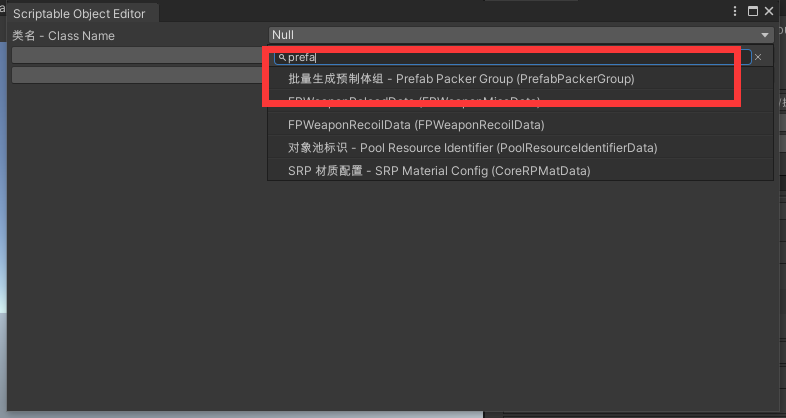
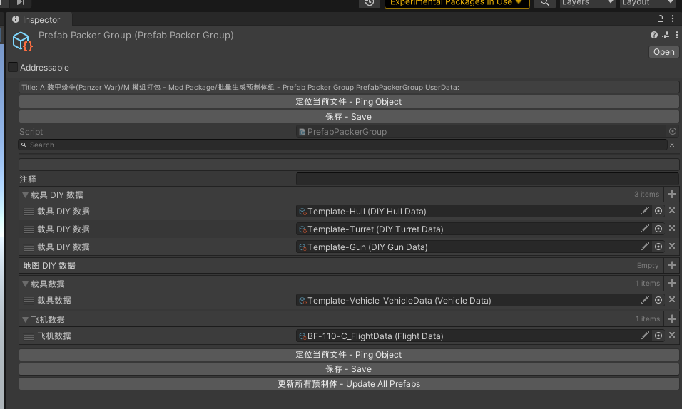
- 在打包流程增加选项，可在打包时候自动重新 Pack 坦克，飞机 ，DIY
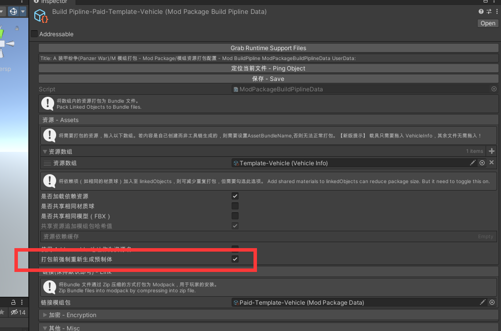
- 增加 lua 的 mono 组件，可以挂载 lua 方法到 gameobject 上进行运行
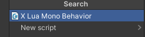
2023.2.6
- 增加对 il runtime 的 dll 的打包支持
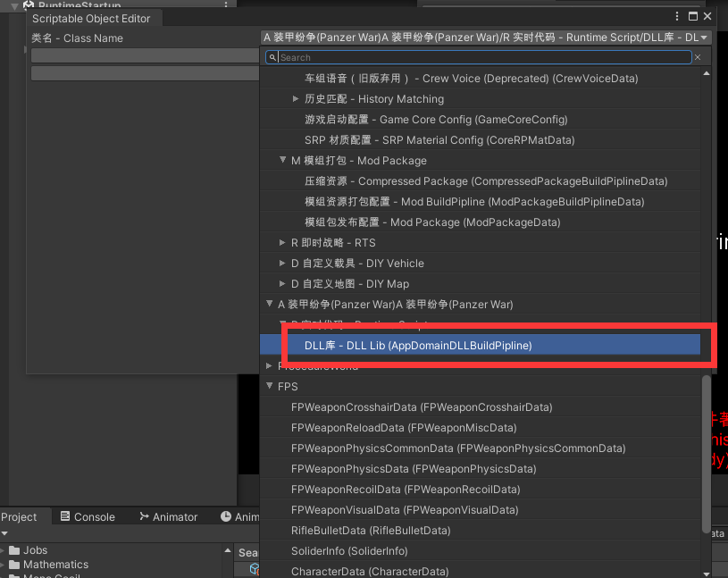
- 增加编辑器工具的语言切换，可以仅显示中文，使界面更加清晰
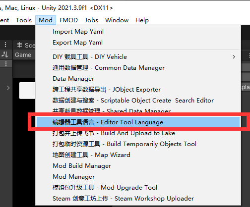
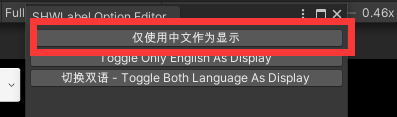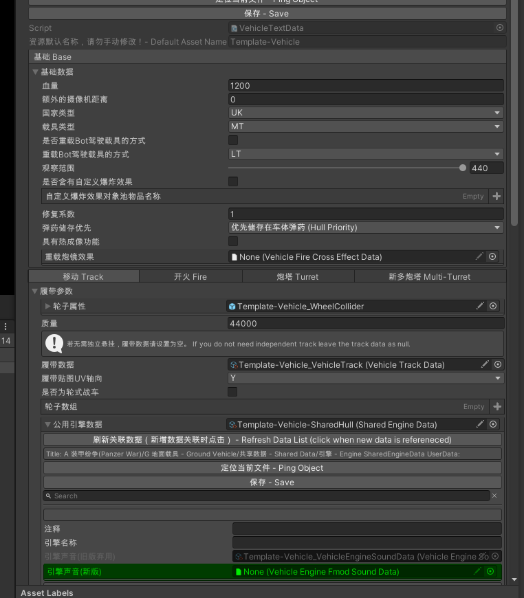
2023.2.2
- Asset Prop 增加清空引用的选项
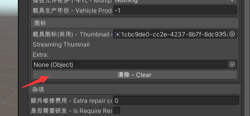
- 飞机编辑器在 Pack 时，会提示哪个物体的引用错误
- 飞机编辑器增加提示
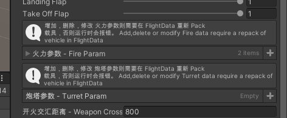
2023.1.28
- 常用资源转到共享目录，迁移文档见：
- 修复使用依赖打包的模组，在实时调试工具内无法正常加载依赖
2023.1.26
- 载具缩略图改为 Streaming
- 载具调试工具增加设置界面，资源升到最新
- 坦克，飞机，DIY Pack 时候，会强制 HitBox 与 模块模型的 R/W 勾上 （未勾上，会导致非等比缩放时，游戏内报 Collision Mesh Data 的错误）
- DIY 坦克增加 Engine Smoke 数组
2023.1.15
- 修复了 pack 载具后，再编辑载具会导致 lod 丢失。 同时，编辑载具的速度得到了优化！
- 优化了载具的打包速度，以及减小了载具的打包包体大小
2023.1.11
- 准镜增加图片自定义，准镜增加文字覆盖，文字颜色
- DIY 生成 Prefab 的检查删去对旧音效的判空逻辑
2022.1.2
- 修复一些 Bug
2022.12.18
- 修复无法对坦克资源进行 Pack Assets
- 针对轮式载具轮子自动创建 Wrapper，防止因为建模软件的错误轴向导致旋转错误
- 增加资产导出 Unity Package 的快捷方式，方便反馈问题给开发者。详情见：
27. Send Mod to Devs for Debugging 发送至模组开发者查问题
2022.12.17
- 增加发布渠道 modpack，mod.io 与 steam 创意工坊
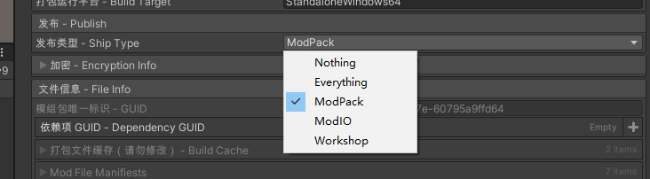
- 增加创意工坊上传工具包 （工程需要手动添加 package，与 middle layer 添加方式一致）
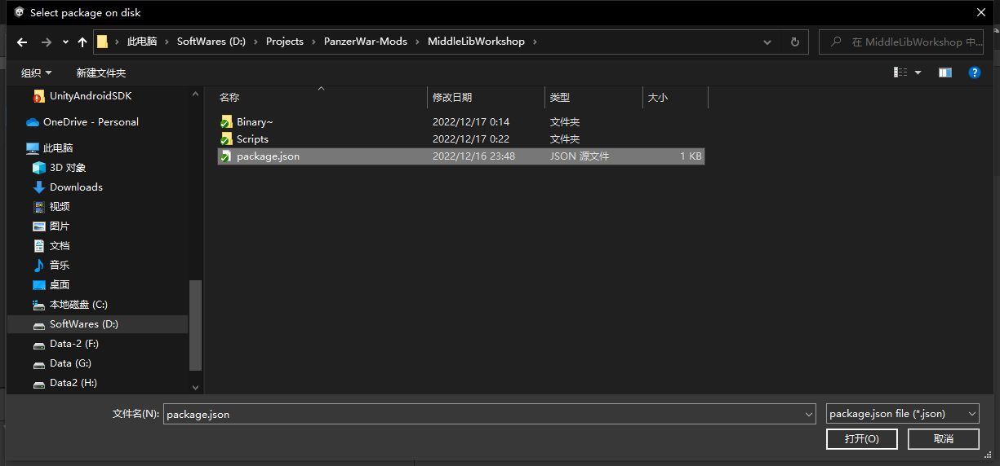
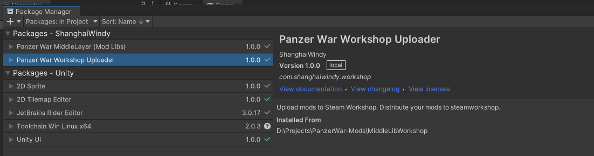
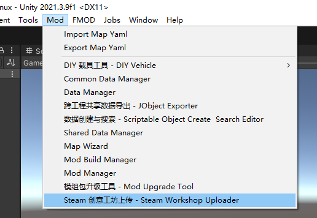
- 优化打包勾选依赖情况下的资源依赖
2022.12.14
- 增加 dds 转 png 自动化流程
2022.12.1
- DIY 资源引用改为 GUID 引用，且兼容旧版本
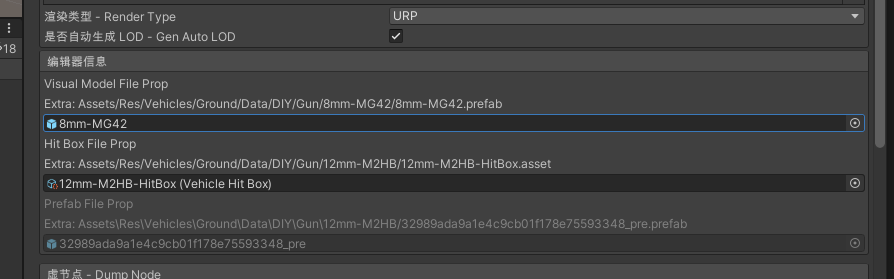
2022.11.30
- Fmod 结构修改
- 工程结构巨大变动，升级指南见：New Project Migration 新工程迁移
2022.11.27
- 增加 Fmod 的 Mod 功能支持
2022.11.22
- 配置数据快速创建与搜索功能
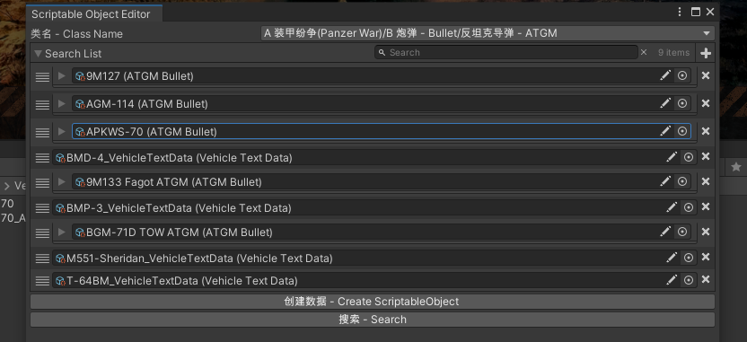
- 预制自定义贴图，将贴图文件解压到指定目录
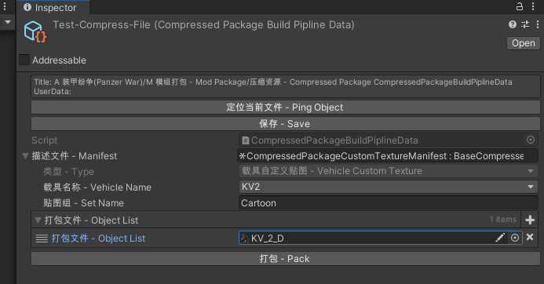
- 预设的 Fmod 音频事件，目前内置了一些坦克的音效。可直接配置在坦克上。
位于：Assets/Res/Vehicles/Data/FMod
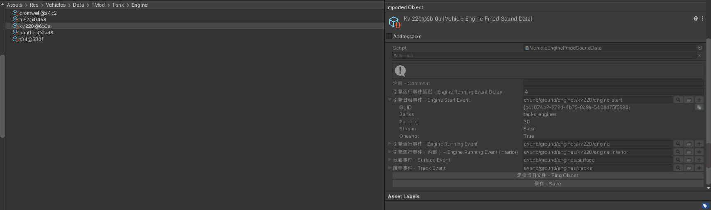
- VehicleTextData 增加额外额外的引擎烟雾的配置点
- 增加自爆功能，可在 VehicleTextData 配置，或者新增自爆组件
2022.11.6
- 针对开启加载依赖资源的 BuildPipline，增加了依赖的可视化日志。可通过 log 的搜索，检查资源的冗余。
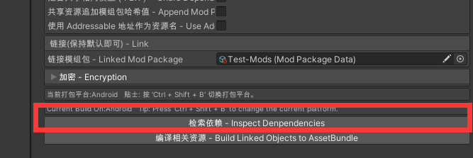
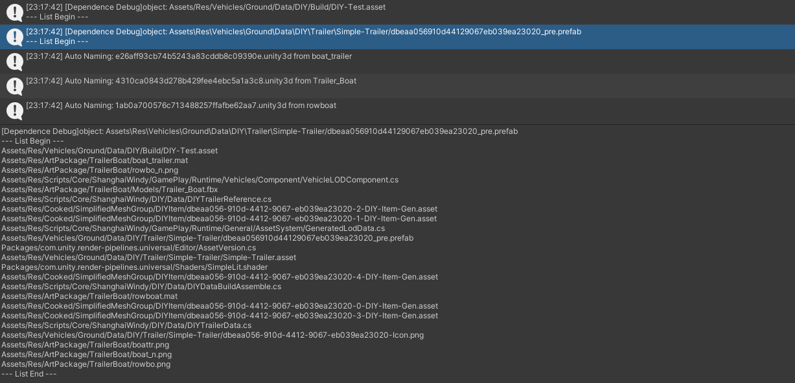
2022.11.1
- 支持发射组
- 支持随主炮，副炮按钮一起开火

- 简单多炮塔的开火配置增加 Dym
2022.10.30
- DIY 载具相关组件生成预制体时，将对应生成自动的 LOD。对于已创建的预制体，需要点击重新生成预制体，才可以使 LOD 生效
- 增加 DIY 载具文件选取的工具，用于批量选择 DIY 载具
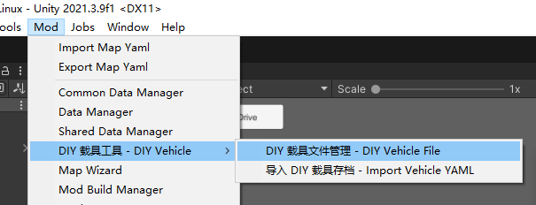
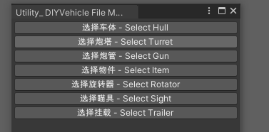
- 选中多个同类型的 DIY 载具配置时，会显示批量操作
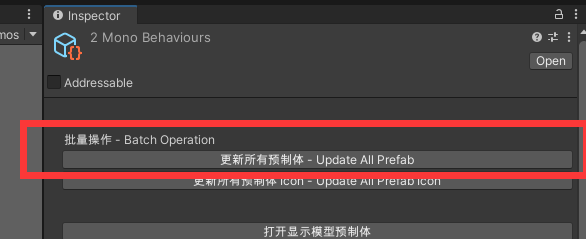
- 正式加入 DIY 的拖挂
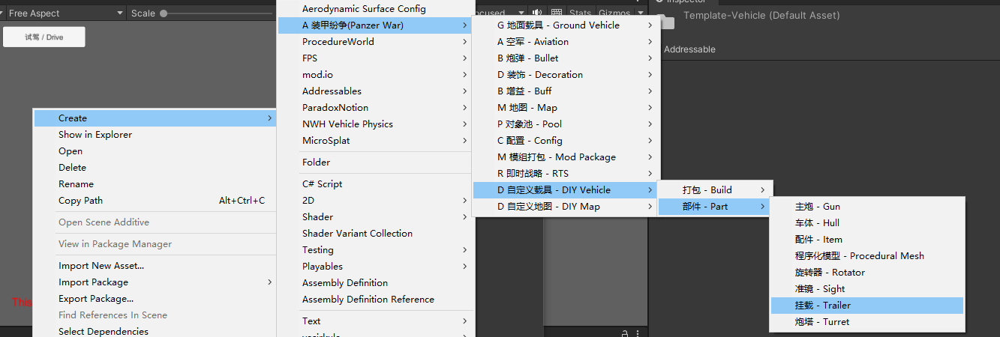
2022.10.25
- 增加 DIY 存档导入为 DIY 载具配置的功能，方便 Mod 开发者在提供配件 Mod 的同时，提供一个预设载具。
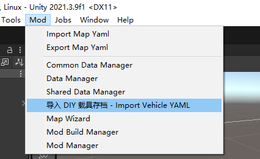
- 增加拖挂的预览 DIY 组件
- 增加 SRP 材质兼容组件，用于做特效中的模型材质
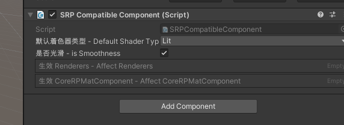
2022.10.22
- 修复创建新载具时候，部分情况下载具的名称未写入本地
2022.10.20
- 修复部分窗口无法展开
2022.10.19
- 修复载具无法导出贴图
2022.10.18
- 增加 FireBall 与 Laser 弹种
- 菜单下拉框本地化处理
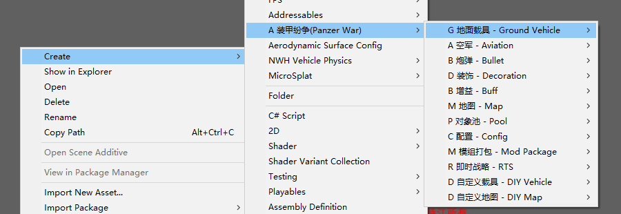
- 特效下拉框本地化处理
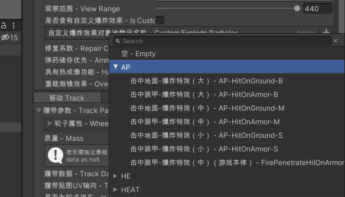
- 项目升级到 Unity 2021.3.9f1 ，若要在编辑器运行载具，则必须升级到此版本，否则无法加载。
2022.9.14
- 修复编辑器 Bug
2022.9.8
- 增加 VT 弹 与弹链
2022.8.29
- 编辑器增加实时调试功能
2022.8.21
- 增加 Mech 的旋转参数 @宝马鸽
- 增加工具修复 Render 层级错误： https://www.yuque.com/chaojiduolajiang/panzerwar/hh40zx @制杖拉菲
- 履带编辑器增加节点统一 X 轴功能.
2022.7.12
- 修复部分情况下弹药架排序导致无法 Pack 载具
附件下载：
2022.5.8
- 修复 DIY 载具打包，上传失败
- 增加 ModPackage 构建脚本支持 详情查看文档： https://www.yuque.com/chaojiduolajiang/panzerwar/dkespl
- 修复依赖资源只对 DIY 内容生效
2022.4.30
- 增加模组包的 Hash 添加到依赖资源，防止加密模组包之间的资源依赖冲突
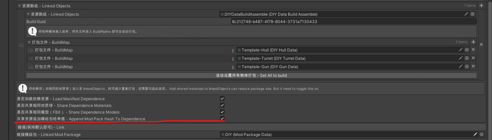
- 修复 飞机，武器的 Vehicle Info 无法打包出来